リファレンスマニュアル
著作権
このドキュメントは以下の貢献者により著作権所有 © 2015 されています。あなたは、GNU General Public License ( http://www.gnu.org/licenses/gpl.html ) のバージョン 3 以降、あるいはクリエイティブ・コモンズ・ライセンス ( http://creativecommons.org/licenses/by/3.0/ ) のバージョン 3.0 以降のいずれかの条件の下で、配布または変更することができます。
*貢献者*
Jean-Pierre Charras.
翻訳
starfort <starfort AT nifty.com>, 2015. kinichiro <kinichiro.inoguchi AT gmail.com>, 2015. yoneken <yoneken AT kicad.jp>, 2011-2015.
フィードバック
バグ報告や提案はこちらへお知らせください:
-
KiCad のドキュメントについて : https://github.com/KiCad/kicad-doc/issues
-
KiCad ソフトウェアについて : https://bugs.launchpad.net/kicad
-
KiCad ソフトウェアの国際化について : https://github.com/KiCad/kicad-i18n/issues
発行日とソフトウェアのバージョン
2015年5月23日
1. Pl_Editor について
Pl_Editor はタイトルブロックや図枠を作成／編集するためのページレイアウトエディタです。
このタイトルブロックや図形（ロゴなど）をまとめて図枠として定義しており、ここではこれらをまとめて ”ページレイアウト” と呼びます。
基本的なページレイアウトの要素は、次のものとなります：
-
線(Line)
-
矩形(Rect)
-
テキスト(Text) （EeschemaやPcbnewの実際の図面で日付やページ番号に自動的に置換えられる書式指定文字を含む）
-
重畳された多角形(Poly) （主にロゴや特別な図形を配置するためのもの）
-
ビットマップ(Bitmap) 。
|
警告
|
注意：ビットマップ(Bitmap)は一部の出力形式（PDFとPS）でのみプロットできます。それ以外の出力形式では、ただの四角形として出力されます。 |
-
* これら要素は繰り返し配置が可能です。またテキスト(Text)と重畳された多角形(Poly)は回転させることができます。
2. Pl_Editor のファイル
2.1. 読み込み可能なファイルと標準のタイトルブロック
Pl_Editorで利用できるのは、*.kicad_wks 拡張子のファイルです。(kicad worksheet)
ファイルの読み込み前は、KiCad内部の標準ページレイアウトが表示されます。
2.2. 出力ファイル
ページレイアウトファイルはKiCadで広く使用されているS式形式の *.kicad_wks 拡張子のファイルとして出力されます。
このファイルは、EeschemaやPcbnewで図枠として使用することが出来ます。
3. 動作の詳細
3.1. 基本的な要素の設定
基本的なページレイアウトの要素は、次のものとなります：
-
線(Line)
-
矩形(Rect)
-
テキスト(Text) （EeschemaやPcbnewの実際の図面で日付やページ番号に自動的に置換えられる書式指定文字を含む）
-
重畳された多角形(Poly) （主にロゴや特別な図形を配置するためのもの） これら重畳された多角形(Poly)は Bitmap2Component によって生成されます。 PL_Editor でこのような図形は作成できません。
-
ビットマップ(Bitmap) （ロゴを配置するための）
|
警告
|
ビットマップ(Bitmap)は一部の出力形式（PDFとPS）でのみプロットできます。 |
また：
-
テキスト(Text) と 重畳された多角形(Poly) は、位置を指定しての回転表示が可能です。
-
線(Line) （多数のセグメントから成る）と 矩形(Rect) は始点/終点の2点の指定となります。 これらは回転できません。(セグメントに対して無効です）
基本的な要素は、繰り返し配置が可能です。
テキスト(Text)については内容をインクリメントしながらの繰り返し配置も可能です。（テキスト(Text)が1文字のアルファベット、または一桁の数値のみ）
3.2. 座標系の設定
始点/終点などの座標は、常にページの指定した角を基準にした座標系で指定されます。
これにより、ページサイズが変わってもレイアウトを保持することが可能となります。
3.3. ページの角（カド）と座標系
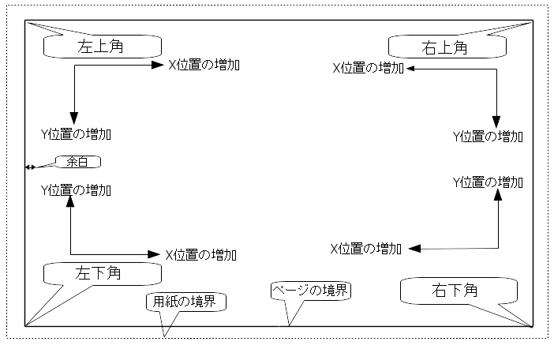
-
用紙サイズが変更された場合も、それぞれの要素は基準となるページの角との関係を保ちます。
-
通常、タイトルブロックは用紙サイズに依らずにページの右下へ表示されます。これは要素を作成した際に右下の角を原点として設定している為です。
矩形(Rect)や線(Line)は、それぞれ原点となる角を指定した2点の座標指定で指定されます。
3.4. 回転
一点を基準とする要素（テキスト(Text)と重畳された多角形(Poly)）は回転することができます。
通常時 ： 回転 ＝ 0°
回転指定： 回転 = 20°/ 10°
3.5. 繰り返し設定
要素は繰り返して配置を行うことが出来ます。
これはグリッド線やグリッドのラベルを作成する際に便利な機能です。
4. テキスト(Text)と書式指定
4.1. 書式指定文字
テキスト(Text)中には、下記に示すような単純な書式指定文字を含めることが可能です。
EeschemaやPcbnewで作成された図面上では、これらの書式指定文字は実際の値に自動的に置換されます。
これらは(プログラム言語の)printf関数と似ています。
書式指定文字は、 % 記号＋１文字で定義されています。
%C 形式は一つの数字を引数に持ちます（コメント識別子）
書式指定文字を下記に示します：
%% = %記号1文字に置換えられます
%K = KiCad のバージョン
%Z = 用紙サイズ名 (A4, USLetter など)
%Y = 会社名
%D = 日付
%R = リビジョン
%S = ページ番号
%N = 全体のページ枚数
%Cx = コメント (xはコメントを指定する0～9の値となります)
%F = ファイル名
%P = ページのパス (Eeschemaのシートのフルネーム)
%T = タイトル
例:
"Size: %Z" と指定した場合、 実際の図面上では "Size: A4" や “Size: USLetter" と表示されます。
ユーザ表示モード ：
 ボタンが押された場合。
Eeschema や Pcbnew で表示されるように、置換可能な文字列が実際の値に置き換えて表示されます。
ボタンが押された場合。
Eeschema や Pcbnew で表示されるように、置換可能な文字列が実際の値に置き換えて表示されます。
"ネイティブ" 表示モード ：
 ボタンが押された場合。 Pl_Editor で指定された書式指定文字をそのまま表示します。
ボタンが押された場合。 Pl_Editor で指定された書式指定文字をそのまま表示します。
4.2. 複数行のテキスト(Text):
テキスト(Text)は複数行とすることが可能です。
ここでは、2通りの改行方法を説明します：
-
"\n" （改行コード）を挿入（主にKiCadのページ設定ダイアログで使用します）
-
Pl_Editorのデザインウィンドウで直接改行する方法
下記に例を示します：
セットアップ
出力
4.3. ページ設定ダイアログでの改行：
ページ設定ダイアログでは、複数行のテキスト(Text)がそのままの形では入力できません。
そこで “\n” （改行コード）を挿入した位置で、強制的に改行させることができます。
例えば、”コメント2”の欄へ2行に渡るテキスト(Text)を入力する例が下記となります：
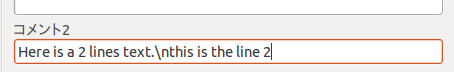
実際の図面上では、下記のように表示されます：
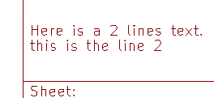
しかし、もし本当にテキスト中に "\n" を入れたい場合は、 "\\n" と入力します。
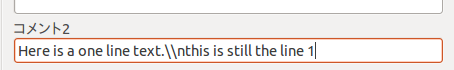
この場合、実際の図面上では、下記のように表示されます：
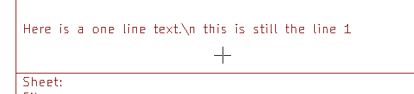
5. 制限の設定
5.1. 1ページ目の設定
Eeschemaでは複数ページの回路図を扱うことが出来ます。
通常、図枠の要素は全てのページに表示されます。
しかし、1ページ目のみに表示させたい、あるいは1ページ目以外のページにのみ表示させたい場合があります。 これらは、プロパティ内の”１ページ目の設定”から設定することが可能です：
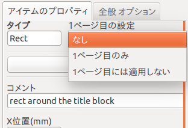
1ページ目の設定
-
なし：ページ番号による表示制限はありません。
-
１ページ目のみ： 要素は1ページ目のみに表示されます。
-
１ページ目には適用しない：要素は1ページ目には表示されず、2ページ目以降の全てのページに表示されます。
5.2. テキスト(Text)サイズの制限
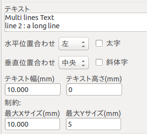
テキスト(Text)については、下記の2つのパラメータを設定することができます：
-
最大Xサイズ(mm)
-
最大Yサイズ(mm)
これらは外形枠（バウンディングボックス）を定義します
これらのパラメータが0でない場合、実際のテキスト(Text)の長さと高さが入力値により制限されます。もしテキスト(Text)の幅や高さが制限値を超えた場合は、入力された制限値に合うように変形されます。
入力されたテキスト(Text)が幅や高さの制限値以下の場合には、テキスト(Text)は変形されずにそのまま表示されます。
制限を設定しない場合。最大 X サイズ(mm) = 0.0 最大 Y サイズ(mm) = 0.0
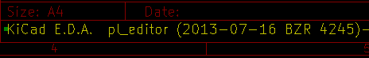
同じテキスト(Text) について、制限を設ける場合。最大 X サイズ(mm) = 40.0 最大 Y サイズ(mm) = 0.0
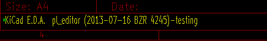
複数行のテキスト(Text)も、同様に制限させることが出来ます：
セットアップ
出力
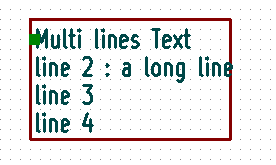
6. Pl_Editorの起動
Pl_Editorはコマンドラインか、またはKiCadマネージャから起動することが出来ます。
コマンドラインから起動する場合、 pl_editor <*.kicad_wksファイルパス> として呼び出してください。
7. Pl_Editorのコマンド
7.1. メイン画面
Pl_Editorのメイン画面を下記に示します：
画面左には要素の一覧が表示されています。
また、画面右には要素のプロパティが表示されています。
7.2. メインウィンドウのツールバー
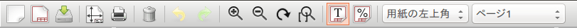
画面上部に表示されているツールバーから、下記のコマンドを呼び出すことが出来ます：
|
|
|
.kicad_wksファイルへ図枠を保存します。 |
|
用紙サイズや向き、 各種コメントを設定する、ページ設定ダイアログを表示します。 |
|
現在のページを印刷します。 |
|
選択されている要素を削除します。 |
|
元に戻す/やり直しのツールです。 |
|
表示の拡大/縮小/再描画/画面全体を表示します。 |
|
ユーザーモードで図枠を表示します。テキスト(Text)はEeschemaやPcbnewで 表示させた時と同じように、各種書式指定文字が置換されて表示されます。 |
|
ネイティブモードで図枠を表示します。 書式指定文字はそのままの形で画面表示されます。 |
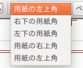 |
用紙の原点の配置を設定します。設定時のマウスカーソルの座標は、画面下部のステータスバーに表示されます。 |
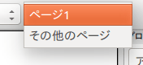 |
画面表示が、1ページ目の図面/または2ページ目以降の図面で表示されます。 これは、1ページ目のみ別のレイアウトを指定した際に切り替えて使用します。 |
7.3. 描画エリア(描画パネル)でのコマンド
7.3.1. キーボードショートカット
F1 |
拡大 |
F2 |
縮小 |
F3 |
画面の再描画 |
F4 |
現在のカーソル位置の描画を画面中央へ移動させます |
Home |
画面全体を表示 |
スペースキー |
dx/dy 表示座標をカーソル位置でゼロリセットします。 （dx/dy座標は画面下部ステータスバーに表示されます） |
→（右矢印） |
カーソルを1グリッド分右へ移動します。 |
←（左矢印） |
カーソルを1グリッド分左へ移動します。 |
↑（上矢印） |
カーソルを1グリッド分上へ移動します。 |
↓（下矢印） |
カーソルを1グリッド分下へ移動します。 |
7.3.2. マウス操作
ホイール |
現在のカーソル位置を中心に拡大/縮小 |
Ctrl + ホイール |
左右方向へスクロール |
Shift + ホイール |
上下方向へスクロール |
右クリック |
コンテキストメニューの表示 |
7.3.3. コンテキストメニュー
(右クリックメニュー)
-
線の追加
-
矩形を追加
-
テキスト入力
-
図枠ファイルを追加
これらは要素を追加するための基本的なコマンドです。
-
中央/ズームイン/ズームアウト/ビューの再描画/自動ズーム/ズームの選択
-
グリッドの選択
|
注
|
“図枠ファイルを追加” は、図面上にロゴを追加するために使用されることを意図しています。 通常、ロゴは大量の頂点を必要とするため手作業で作成することは困難です。しかし、Bitmap2Componentプログラムで作成したファイルを読み込むことでロゴを簡単に使用できます。 |
7.4. ステータスバー
ステータスバーは、Pl_Editorの画面下部へ配置されており、各種情報が表示されています。
座標系は、 常に原点として設定された角 を 基準 とした座標が表示されています。
8. 画面左ウィンドウ(デザインツリー)
画面左には、要素の一覧が表示されています。
一覧から左クリックで要素をひとつ選択する事ができ、右クリックでコンテキストメニューを表示することが出来ます。
右クリックのメニューでは、要素の追加/削除の基本操作を行うことが出来ます。
→ 左クリックで選択された要素は、画面上で色が変化します。.
画面左のデザインツリーで text10 を選択すると、対応する要素が黄色で表示されます。
9. 画面右ウィンドウ
(編集ウィンドウ)
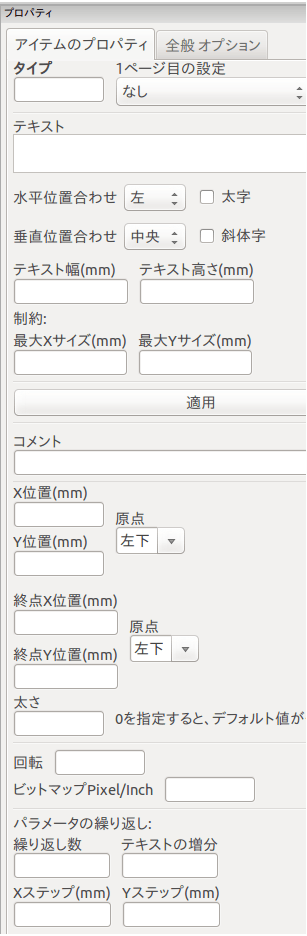 |
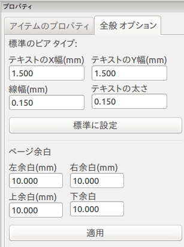 |
画面右に表示されている編集ウィンドウでは、選択された要素のプロパティを編集することが出来ます。
編集できる設定は、選択された要素の種類によって異なります：
線(Line)/矩形(Rect)の設定 |
テキスト(Text)の設定 |
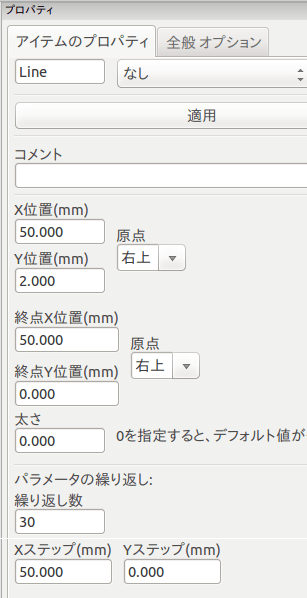 |
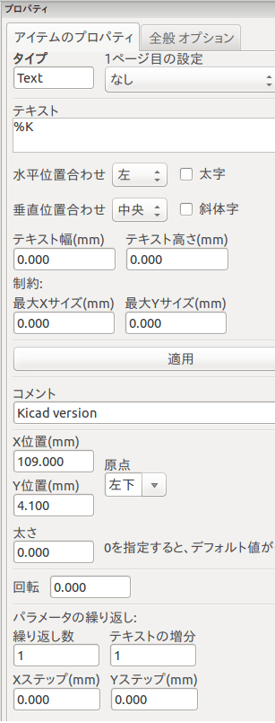 |
重畳された多角形(Poly)の設定 |
ビットマップ(Bitmap)の設定 |
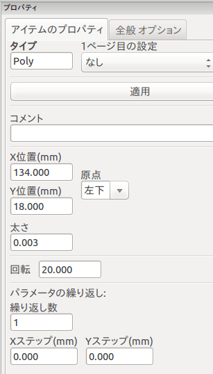 |
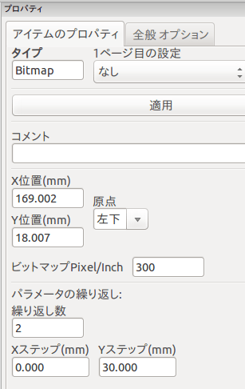 |
10. 編集作業
10.1. 要素の選択
要素を選択するには、下記の３通りの方法があります：
-
デザインツリー(画面左ウィンドウ)より、対象の要素を選択する
-
対象の要素の上で左クリックする
-
対象の要素の上で右クリックする（要素が選択されると同時に、メニューが表示されます）
選択された要素は、黄色で描画されます。
|
始点（
|


要素を右クリックした場合、下記のようなメニューが表示されます。
メニュー内容は、クリックされた位置により変化します：
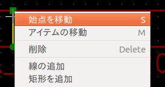 |
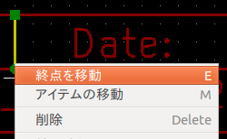 |
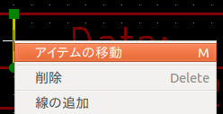 |
クリックした位置に複数の要素があり選択対象が不明な場合、下記のようなダイアログが表示されます。対象を一覧から選択し、OKをクリックしてください：
|
線(Line)や矩形(Rect)の始点/終点を右クリックし、メニューより”始点を移動”または ”終点を移動”を選択することで、始点/終点を移動させることが出来ます。 |

10.2. 要素の作成
新規の要素を追加したい場合、画面左のデザインツリーまたは描画エリアで右クリックします。
コンテキストメニューが表示されます：
デザインツリーでの右クリックメニュー
描画エリアでの右クリックメニュー
線(Line)や矩形(Rect)、テキスト(Text)の追加は、メニューの該当するコマンドを選択することで作成できます。
ロゴについては、Bitmap2Componentプログラムでファイルを作成しなければなりません。
ロゴ（重畳された多角形(Poly)）は、”図枠ファイルを追加”コマンドより挿入します。
10.3. 線(Line)/矩形(Rect)/テキスト(Text)の追加
右クリックメニューより各要素を追加すると、下記のようなウィンドウが表示されます：
線(Line)/矩形(Rect)の追加
テキスト (Text) の追加
始点/終点座標や、座標系原点の設定はこのウィンドウより行います。
これら設定は、後から画面右側の編集ウィンドウから再設定することが可能です。また始点/終点位置などは要素をマウス操作などで移動することによっても変更されます。
多くの場合、始点/終点の座標系原点の設定は同じになります。
座標原点の設定が始点/終点で異なる場合、作成後にこれら設定を変更すると図形が位置や形状が大きく変形することがあります。
テキスト(Text)や小さな図形などでは、要素作成後に右クリックメニューより要素を移動し位置を調整する方が便利な場合があります。
10.4. ロゴの追加
重畳された多角形(Poly)としてのロゴ（ベクトル線化された画像ロゴ）を挿入する場合、最初にBitmap2Componentプログラムによりロゴファイルを生成しておく必要があります。
Bitmap2Component プログラムは、図枠ファイル形式で作成され、 ”図枠ファイルを追加” コマンドによりデザインに取り込みます。
Bitmap2Component プログラムは、画像ファイルを一つの重畳された多角形(Poly)へと変換し、図枠ファイル形式で出力します。
このコマンドでは、全ての図枠ファイル形式のファイルを取り込み、現在のレイアウトにマージさせることが可能です。
一度ロゴを取り込んだ後、移動や編集ウィンドウによるパラメータの編集が可能です。
10.5. ビットマップ(Bitmap)の追加
多くの形式（PNG, JPEG, BMPなど）の画像ファイルを挿入することができます。
-
追加された画像ファイルは、300PPI(Pixel/Inch)として設定されます。
-
この設定は、編集ウィンドウで変更することが可能です。（画面右）
-
実際のサイズは、このパラメータに依存します。
-
高解像度の画像ファイルを使用すると、図面ファイル等のファイルサイズの肥大化、描画／プロット時間の増大を招くことにご注意ください。
ビットマップ(Bitmap)は、繰り返しの設定ができますが、 回転はできません 。